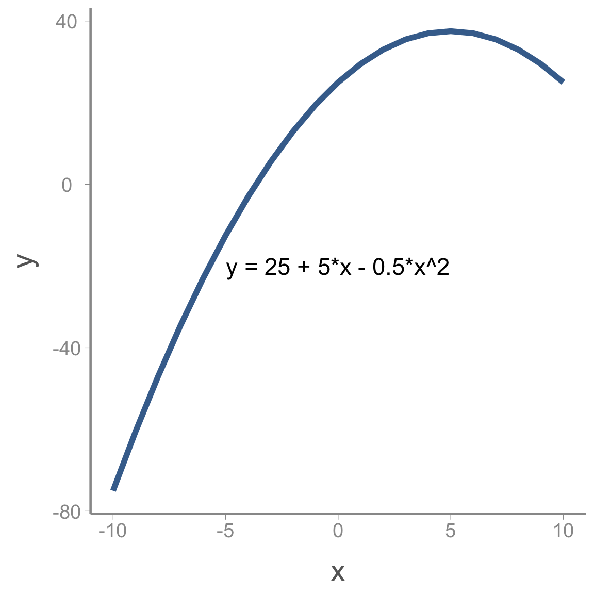
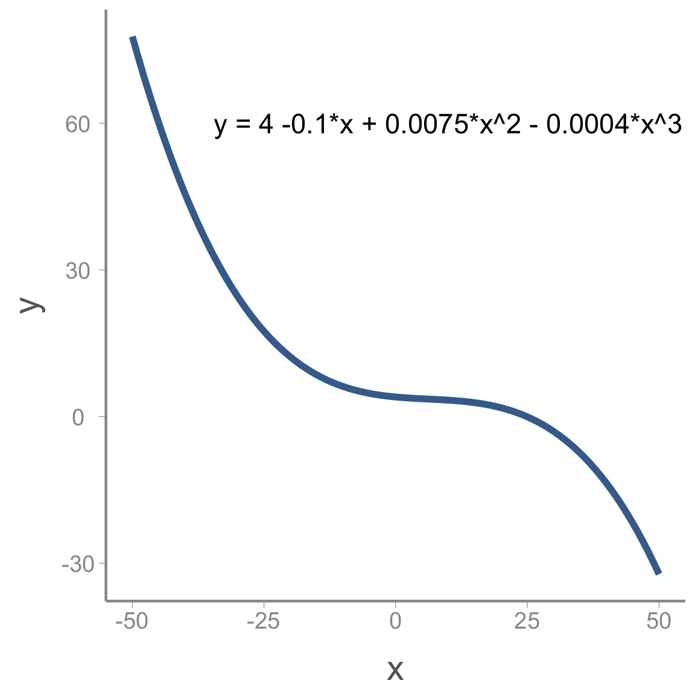
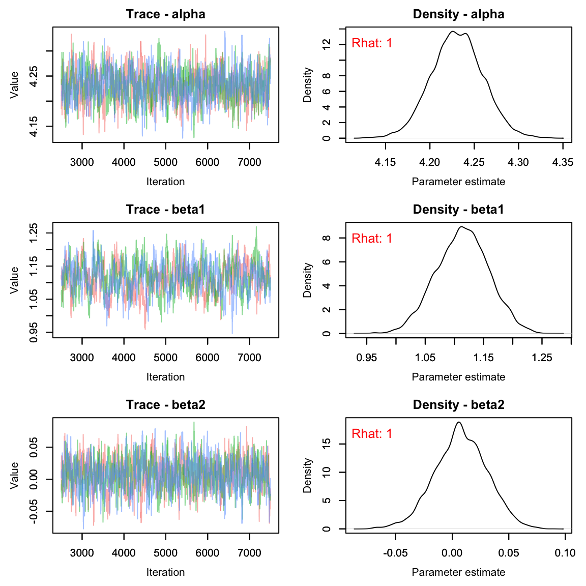
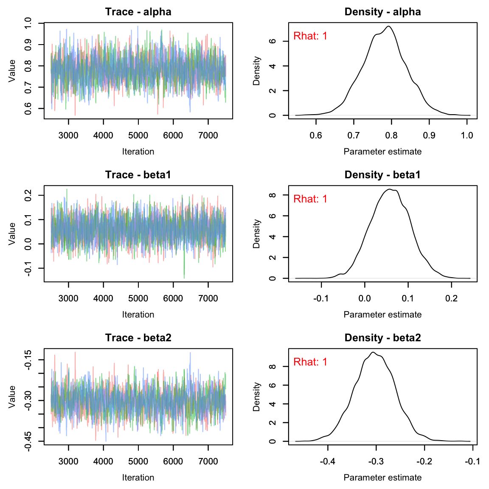

GLMs for modeling count data
Clark Rushing
Lab4_glms.RmdIn this activity, we will analyze a small data set containing counts of both population size and reproductive success using Poisson and Binomial GLMs.
Objectives
Analyze count data using Poisson and Binomial GLMs
Gain experience diagnosing Nimble output to check convergence
-
Rfunctions used in this exercise:
Data
The data for this activity comes from a long-term project that monitored a population of peregrine falcons nesting in the French Jura from 1964 to 2003 1.

Load and inspect the data:
| Year | Pairs | R.Pairs | Eyasses |
|---|---|---|---|
| 1964 | 34 | 19 | 27 |
| 1965 | 45 | 18 | 30 |
| 1966 | 39 | 22 | 36 |
| 1967 | 36 | 19 | 37 |
| 1968 | 20 | 8 | 19 |
| 1969 | 18 | 7 | 10 |
The falcons dataframe has 4 columns:
- Year: the year (integer).
- Pairs: the number of adult pairs (integer).
- R.pairs: the number of reproductive pairs (integer).
- Eyasses: the number of fledged young (integer).
Analysis 1: Change in population size
The first model we will fit examines change in the number of adult falcon pairs over time. Plotting the data shows that this change has not been linear:
ggplot(falcons, aes(x = Year, y = Pairs)) + geom_point() + stat_smooth(se = FALSE)After a short decline at the beginning of the study period, the population then increased dramatically before perhaps reaching its carrying capacity.
Modeling non-linear effects using linear models
How can we model the non-linear change in abundance if, by definition, linear models model linear effects? Using polynomials!
Remember the equation for a curved line with a single peak (or bottom):
$$\Large y = a + b \times x + c \times x^2$$

Where is the maximum (or minimum) value of , is the value of where this maximum (or minimum) occurs and determines whether the peak is a maximum () or a minimum ().
We can add more complex shape by adding additional polynomial terms. For example, including a cubic term creates an s-shaped curve:
$$\Large y = a + b \times x + c \times x^2 + d \times x^3$$

Including polynomial terms in the linear predictor on the model gives us enormous flexibility to model non-linear relationships using GLMs.
Modeling change in falcon counts
To build a model for the falcon data, we need to define the components required in all GLMs (the distribution, link function, and linear predictor). Because these are counts, a natural choice for the distribution is:
where is the observed count in year and is the expected count.
As we learned in lecture, the conventional link function for count data is the log-link:
Finally, we need to write the linear predictor. Based on the preliminary visualization of the data, a cubic polynomial might be appropriate to capture the non-linear change over time:
Accessing and viewing the Nimble model
You can copy and paste the following code into your own R script.
library(nimble)
falcon_mod <- nimbleCode({
# Priors
alpha ~ dnorm(0, 0.33)
beta1 ~ dnorm(0, 0.33)
beta2 ~ dnorm(0, 0.33)
beta3 ~ dnorm(0, 0.33)
# Likelihood
for (i in 1:n){
C[i] ~ dpois(lambda[i])
log(lambda[i]) <- alpha + beta1 * year[i] + beta2 * pow(year[i],2) + beta3 * pow(year[i],3)
} #end i
})From this file, you can see that we will use relatively non-informative normal priors on each of the regression coefficients.
You can also see that the likelihood statement is very similar to the
linear regression model from the last lecture, with a few minor
differences. First, because we assume the observed falcon counts come
from a Poisson distribution, we use dpois(lambda[i]) rather
than dnorm(mu[i], tau). Also, we have to apply the log-link
function to the predicted counts (log(lambda[i])=...).
Notice that Nimble allows you to model the transformed predicted counts
on the left hand side of the linear predictor equation
In Lab Questions
Plot a histogram of random samples from the normal prior used in the model (remember to convert the precision of
0.33to standard deviation). As you can see, this is not as vague as the normal priors we have used in the past. What is the advantage of using less-vague normal priors?In the linear regression model we fit in the last lecture, we also had a prior for , the (inverse) of the process variance. Why do we not include that parameter in this model?
Creating the
lambda[i]object is not strictly necessary since it is a deterministic function of year. If you wanted to have fewer lines of code, you could include the linear predictor directly inside of thedpois()function instead oflambda[i], though you would need to appropriately transform the linear predictor. What transformation would you use to put the linear predictor on the count scale?
Fitting the model
Before fitting the model, we need to prepare the input for Nimble This includes:
storing the data as a named list
storing constants as a named list
creating a function to randomly generate the initial values for each parameter
creating a vector with the parameters we want Nimble to monitor
set the MCMC settings
We’ve mentioned several times, it’s often a bad idea to include
covariate values that are too far from 0. For this reason, we will first
scale year to
and
:
year <- (falcons$Year - mean(falcons$Year))/sd(falcons$Year)
nimdat <- list(C = falcons$Pairs)
nimconsts <- list(year = year, n = nrow(falcons))
niminits <- function(){list(alpha = rnorm(1), beta1 = rnorm(1), beta2 = rnorm(1), beta3 = rnorm(1))}
params <- c("alpha", "beta1", "beta2", "beta3", "lambda")
nC <- 3 #chains
nI <- 10000 #iterations
nB <- 2500 #burnin
nT <- 1 #thinNow we’re ready to run the model. The easiest way to run a Nimble model is to run it in one command:
falcon_res <- nimbleMCMC(code = falcon_mod,
data = nimdat,
constants = nimconsts,
inits = niminits(),
monitors = params,
thin = nT,
niter = nI,
nburnin = nB,
nchains = nC,
samplesAsCodaMCMC = TRUE
)
#> |-------------|-------------|-------------|-------------|
#> |-------------------------------------------------------|
#> |-------------|-------------|-------------|-------------|
#> |-------------------------------------------------------|
#> |-------------|-------------|-------------|-------------|
#> |-------------------------------------------------------|However, sometimes (when you get more advanced), you’ll want to be able to customize your Nimble runs a little bit more. It’s also much easier to error check your initial values on models that take a very long time to run if you run it step by step. Here’s what that would look like with one chain:
prepnim <- nimbleModel(code = falcon_mod, constants = nimconsts,
data = nimdat, inits = niminits(), calculate = T)
prepnim$initializeInfo() #will tell you what is or isn't intialized
prepnim$calculate() #if this is NA or -Inf you know it's gone wrong
mcmcnim <- configureMCMC(prepnim, monitors = params, print = T)
nimMCMC <- buildMCMC(mcmcnim) #actually build the code for those samplers
Cmodel <- compileNimble(prepnim) #compiling the model itself in C++;
Compnim <- compileNimble(nimMCMC, project = prepnim) # compile the samplers next
Compnim$run(niter = nI, nburnin = nB, thin = nT)
falcon_res <- (as.mcmc(as.matrix(Compnim$mvSamples)))View a portion of the results (printing all of the
lambda values takes up too much room):
summary(falcon_res[,c('alpha', 'beta1', 'beta2', 'beta3', 'lambda[1]', 'lambda[2]', 'lambda[3]')])$quantiles| 2.5% | 25% | 50% | 75% | 97.5% | |
|---|---|---|---|---|---|
| alpha | 4.1739 | 4.2103 | 4.2301 | 4.2516 | 4.2887 |
| beta1 | 1.0190 | 1.0836 | 1.1170 | 1.1489 | 1.2057 |
| beta2 | -0.0399 | -0.0079 | 0.0078 | 0.0241 | 0.0530 |
| beta3 | -0.2810 | -0.2514 | -0.2347 | -0.2168 | -0.1832 |
| lambda[1] | 26.5225 | 30.3368 | 32.4247 | 34.6385 | 38.9902 |
| lambda[2] | 25.5318 | 28.6873 | 30.3652 | 32.1225 | 35.5587 |
| lambda[3] | 24.9367 | 27.5302 | 28.9135 | 30.3248 | 33.1395 |
Note that beta2 appears to cross 0 - there’s not much of an effect of year^2 on lambda.
This seems reasonable, but let’s make sure the Rhat
values are less than 1.1. To do this, we’ll use the
gelman.diag() function from the coda
package.
library(coda)
gelman.diag(falcon_res, multivariate = F)$psrf[1:10,] #don't want to print out all 40 lambdas
#> Point est. Upper C.I.
#> alpha 1.004 1.014
#> beta1 1.016 1.056
#> beta2 1.003 1.010
#> beta3 1.016 1.058
#> lambda[1] 1.004 1.015
#> lambda[2] 1.003 1.010
#> lambda[3] 1.001 1.004
#> lambda[4] 1.000 1.001
#> lambda[5] 1.000 1.000
#> lambda[6] 1.001 1.003All parameters appear to have converged.
As usual, let’s check the trace plots to see how they look:
# View traceplots for alpha, beta1, beta2, and beta3 (not for lambda)
plot(falcon_res[,params[-5],])
By monitoring lambda we can also plot the predicted
counts along with the observed counts. First, we need to calculate the
posterior means and upper/lower bounds of the 95% credible interval and
add them to the falcons data frame, then use ggplot to visualize:
#get the quantiles for just the lambda parameters:
lambdas <- summary(falcon_res[,paste0('lambda[', 1:40, ']')])$quantiles
falcons <- dplyr::mutate(falcons, lambda = lambdas[,3],
q2.5 = lambdas[,1],
q97.5 = lambdas[,5])
ggplot(falcons) +
geom_ribbon(aes(x = Year, ymin = q2.5, ymax = q97.5), fill = "grey90") +
geom_path(aes(x = Year, y = lambda), color = "red") +
geom_point(aes(x = Year, y = Pairs)) +
scale_y_continuous("Pairs")
Analysis 2: Nest success model
Next, let’s use the falcons data set to fit another type
of GLM - the binomial GLM. Hopefully this exercise will show you that
once you’re comfortable writing out and coding the GLM components
(distribution, link function, and linear predictor), it is extremely
easy to fit models with different distributional assumptions.
To estimate reproductive success (i.e., the probability that a pair
successfully produces offspring), we will model the number of
reproductive pairs (falcons$R.Pairs) as a function of the
total number of pairs (falcons$Pairs).
Because the total number of reproductive pairs cannot exceed the
total number of pairs, the counts in falcons$.RPairs are
bounded to be less than falcons$Pairs. In this case, the
Poisson distribution is not an appropriate count model. Instead, we will
use the binomial distribution:
Our goal is to model , the probability of nesting successfully in each year. In this case, the log link is not appropriate - is bound between 0 and 1. For probabilities, the logit link is generally the appropriate link function:
Following Kéry & Schaub, we’ll model probability as a quadratic function of year:
As in the last example, you can copy the code here. Note that in Nimble the order for the arguments of a binomial are probability and then size, unlike what we would type in R:
pairs_mod <- nimbleCode({
# Priors
alpha ~ dnorm(0, 0.33)
beta1 ~ dnorm(0, 0.33)
beta2 ~ dnorm(0, 0.33)
# Likelihood
for (t in 1:nyears){
C[t] ~ dbinom(p[t], N[t])
logit(p[t]) <- alpha + beta1 * year[t] + beta2 * pow(year[t],2)
} #end i
})As before, we prepare the data and run the model:
#using standardized year from above
nimdat2 <- list(C = falcons$R.Pairs)
nimconsts2 <- list(N = falcons$Pairs, year = year, nyears = nrow(falcons))
niminits2 <- function(){list(alpha = rnorm(1), beta1 = rnorm(1), beta2 = rnorm(1))}
params2 <- c("alpha", "beta1", "beta2", "p")
nC <- 3
nI <- 10000
nB <- 2500
nT <- 1
pairs_res <- nimbleMCMC(code = pairs_mod,
data = nimdat2,
constants = nimconsts2,
inits = niminits2(),
monitors = params2,
thin = nT,
niter = nI,
nburnin = nB,
nchains = nC,
samplesAsCodaMCMC = TRUE
)
#> |-------------|-------------|-------------|-------------|
#> |-------------------------------------------------------|
#> |-------------|-------------|-------------|-------------|
#> |-------------------------------------------------------|
#> |-------------|-------------|-------------|-------------|
#> |-------------------------------------------------------|| 2.5% | 25% | 50% | 75% | 97.5% | |
|---|---|---|---|---|---|
| alpha | 0.6767 | 0.7476 | 0.7847 | 0.8212 | 0.8918 |
| beta1 | -0.0317 | 0.0285 | 0.0588 | 0.0890 | 0.1487 |
| beta2 | -0.3854 | -0.3333 | -0.3048 | -0.2772 | -0.2204 |
| p[1] | 0.3869 | 0.4349 | 0.4593 | 0.4852 | 0.5344 |
| p[2] | 0.4139 | 0.4591 | 0.4819 | 0.5056 | 0.5509 |
| p[3] | 0.4400 | 0.4821 | 0.5033 | 0.5250 | 0.5665 |
# View traceplots for alpha, beta1, and beta2(not for p)
plot(pairs_res[,params2[-4],])
ps <- summary(pairs_res[,paste0('p[', 1:40, ']')])$quantiles
falcons <- dplyr::mutate(falcons, p = ps[,3],
q2.5_p = ps[,1],
q97.5_p = ps[,5])
ggplot(falcons) +
geom_ribbon(aes(x = Year, ymin = q2.5_p, ymax = q97.5_p), fill = "grey90") +
geom_path(aes(x = Year, y = p), color = "red") +
geom_point(aes(x = Year, y = R.Pairs/Pairs)) +
scale_y_continuous("Pairs")Homework Questions
Using what you’ve learned in this lab, write out a model for the expected number of nestlings (Eyasses) per reproducing pair (R.pairs) in each year.
- Begin by writing out the mathematical formulation of your model
- Write out the Nimble code.
- Provide your model with data, constants and initial values
- Check your output for convergence
- Display a ggplot showing the expected number of nestlings per reproducing pair in each year (with 95% credible interval) vs the raw data. Don’t forget a title and axis labels.
It may help to plot the data first to see what type of data you are working with:
ggplot(falcons, aes(x = Year, y = Eyasses/R.Pairs))+
geom_line(lwd = 1, lty = 2)+
geom_point()+
geom_smooth()
- In our second analysis, we used a binomial GLM to describe the proportion of successful peregrine pairs per year in the French Jura mountains. To see the connections between three important types of GLMs, first use a Poisson GLM to model the number of successful pairs (thus disregarding the fact that the binomial total varies by year), and second, use a normal GLM to do the same. In the same graph, compare the predicted numbers of successful pairs for every year under all three models (binomial, Poisson, and normal GLMs). [This assignment stolen directly from the WinBUGS book, so blame Marc Kéry and Michael Schaub for this one.]
Note: If you find that your normal distribution model predicts extremely low counts, be sure to look at your priors. If selected correctly, you should see all 3 models roughly overlap the raw data.
- On a 1-10 scale, with 1 being the worst week ever and 10 being the best, how would you rate this week’s content? What lingering questions/confusion about the lecture or lab do you still have?